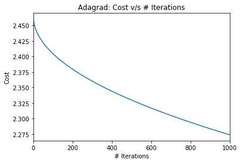
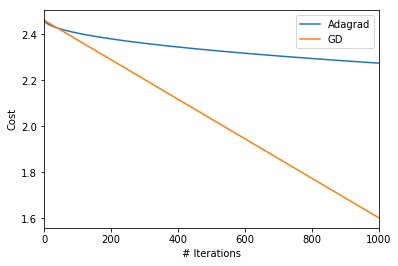
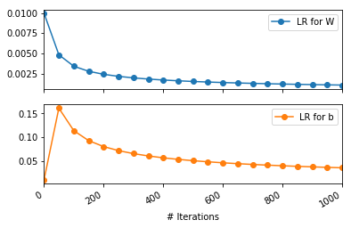
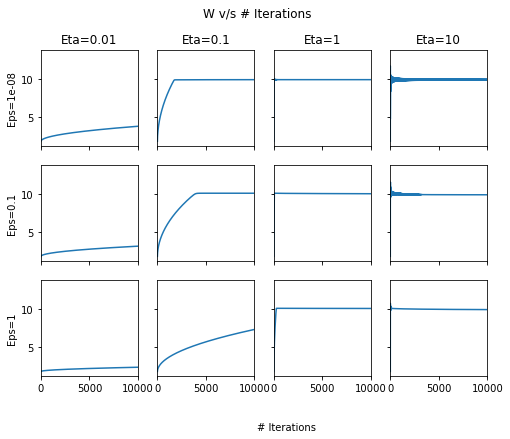

import autograd.numpy as np
import matplotlib.pyplot as plt
import pandas as pd
%matplotlib inlineProgramatically understanding Adagrad
In this post, I’ll be using Adagrad for solving linear regression. As usual, the purpose of this post is educational. This link gives a good overview of Adagrad alongwith other variants of Gradient Descent. To summarise from the link:
It adapts the learning rate to the parameters, performing larger updates for infrequent and smaller updates for frequent parameters. For this reason, it is well-suited for dealing with sparse data.
As I’d done previously, I’ll be using Autograd to compute the gradients. Please note Autograd and not Adagrad!
Formulation ([borrowed from here])((http://ruder.io/optimizing-gradient-descent/)))
In regular gradient descent, we would update the \(i^{th}\) parameter in the \(t+1^{th}\) iteration, given the learning rate \(\eta\), where \(g_{t, i}\) represents the gradient of the cost wrt \(i^{th}\) param at time \(t\).
\[ \theta_{t+1, i} = \theta_{t, i} - \eta \cdot g_{t, i} \tag{Eq 1} \]
In Adagrad, we update as follows:
\[\theta_{t+1, i} = \theta_{t, i} - \dfrac{\eta}{\sqrt{G_{t, ii} + \epsilon}} \cdot g_{t, i} \tag{Eq 2}\]
Here,
\(G_{t} \in \mathbb{R}^{d \times d}\) is a diagonal matrix where each diagonal element \(i, i\) is the sum of the squares of the gradients w.r.t. \(\theta_i\) up to time step \(t\) , while \(\epsilon\) is a smoothing term that avoids division by zero (usually on the order of 1e−8).
Customary imports
True model
\[Y = 10 X + 6\]
Generating data
np.random.seed(0)
n_samples = 50
X = np.linspace(1, 50, n_samples)
Y = 10*X + 6 + 2*np.random.randn(n_samples)plt.plot(X, Y, 'k.')
plt.xlabel("X")
plt.ylabel("Y");Model to be learnt
We want to learn W and b such that:
\[Y = 10 W+ b\]
Defining the cost function
We will now write a general cost function that accepts a list of parameters.
def cost(param_list):
w, b = param_list
pred = w*X+b
return np.sqrt(((pred - Y) ** 2).mean(axis=None))/(2*len(Y))Dry run of cost and gradient functioning
# Cost of w=0, b=0
w, b = 0., 0.
print("Cost at w={}, b={} is: {}".format(w, b, cost([w, b])))
# Cost of w=10, b=4. Should be lower than w=0, b=0
w, b = 10., 4.
print("Cost at w={}, b={} is: {}".format(w, b, cost([w, b])))
# Computing the gradient at w=0, b=0
from autograd import grad
grad_cost =grad(cost)
w, b = 0., 0.
print("Gradient at w={}, b={} is: {}".format(w, b, grad_cost([w, b])))
# Computing the gradient at w=10, b=4. We would expect it to be smaller than at 0, 0
w, b = 10., 4.
print("Gradient at w={}, b={} is: {}".format(w, b, grad_cost([w, b])))Cost at w=0.0, b=0.0 is: 2.98090446495
Cost at w=10.0, b=4.0 is: 0.0320479471939
Gradient at w=0.0, b=0.0 is: [array(-0.29297046699711365), array(-0.008765162440358071)]
Gradient at w=10.0, b=4.0 is: [array(-0.14406455246023858), array(-0.007117830452061141)]Adagrad algorithm (applied on whole data batch)
def adagrad_gd(param_init, cost, niter=5, lr=1e-2, eps=1e-8, random_seed=0):
"""
param_init: List of initial values of parameters
cost: cost function
niter: Number of iterations to run
lr: Learning rate
eps: Fudge factor, to avoid division by zero
"""
from copy import deepcopy
import math
# Fixing the random_seed
np.random.seed(random_seed)
# Function to compute the gradient of the cost function
grad_cost = grad(cost)
params = deepcopy(param_init)
param_array, grad_array, lr_array, cost_array = [params], [], [[lr for _ in params]], [cost(params)]
# Initialising sum of squares of gradients for each param as 0
sum_squares_gradients = [np.zeros_like(param) for param in params]
for i in range(niter):
out_params = []
gradients = grad_cost(params)
# At each iteration, we add the square of the gradients to `sum_squares_gradients`
sum_squares_gradients= [eps + sum_prev + np.square(g) for sum_prev, g in zip(sum_squares_gradients, gradients)]
# Adapted learning rate for parameter list
lrs = [np.divide(lr, np.sqrt(sg)) for sg in sum_squares_gradients]
# Paramter update
params = [param-(adapted_lr*grad_param) for param, adapted_lr, grad_param in zip(params, lrs, gradients)]
param_array.append(params)
lr_array.append(lrs)
grad_array.append(gradients)
cost_array.append(cost(params))
return params, param_array, grad_array, lr_array, cost_arrayExperiment time!
Evolution of learning rates for W and b
Let us see how the learning rate for W and b will evolve over time. I will fix the initial learning rate to 0.01 as mot of the Adagrad literature out there seems to suggest.
# Fixing the random seed for reproducible init params for `W` and `b`
np.random.seed(0)
param_init = [np.random.randn(), np.random.randn()]
lr = 0.01
eps=1e-8
niter=1000
ada_params, ada_param_array, ada_grad_array, ada_lr_array, ada_cost_array = adagrad_gd(param_init, cost, niter=niter, lr=lr, eps=eps)Let us first see the evolution of cost wrt time
pd.Series(ada_cost_array, name='Cost').plot(title='Adagrad: Cost v/s # Iterations')
plt.ylabel("Cost")
plt.xlabel("# Iterations");
Ok. While There seems to be a drop in the cost, the converegence will be very slow. Remember that we had earlier found
Cost at w=10.0, b=4.0 is: 0.0320479471939
I’m sure this means that our parameter estimates are similar to the initial parameters and far from the true parameters. Let’s just confirm the same.
print("After {} iterations, learnt `W` = {} and learnt `b` = {}".format(niter, *ada_params))After 1000 iterations, learnt `W` = 2.38206194526 and learnt `b` = 1.01811878873I would suspect that the learning rate, courtesy of the adaptive nature is falling very rapidly! How would the vanilla gradient descent have done starting with the same learning rate and initial values? My hunch is it would do better. Let’s confirm!
GD vs Adagrad!
def gd(param_init, cost, niter=5, lr=0.01, random_seed=0):
np.random.seed(random_seed)
from copy import deepcopy
grad_cost = grad(cost)
params = deepcopy(param_init)
param_array, grad_array, cost_array = [params], [], [cost(params)]
for i in range(niter):
out_params = []
gradients = grad_cost(params)
params = [param-lr*grad_param for param, grad_param in zip(params, gradients)]
param_array.append(params)
grad_array.append(gradients)
cost_array.append(cost(params))
return params, param_array, grad_array, cost_array# Fixing the random seed for reproducible init params for `W` and `b`
np.random.seed(0)
param_init = [np.random.randn(), np.random.randn()]
lr = 0.01
niter=1000
gd_params, gd_param_array, gd_grad_array, gd_cost = gd(param_init, cost, niter=niter, lr=lr)pd.Series(ada_cost_array, name='Cost').plot(label='Adagrad')
pd.Series(gd_cost, name='Cost').plot(label='GD')
plt.ylabel("Cost")
plt.xlabel("# Iterations")
plt.legend()<matplotlib.legend.Legend at 0x1153b4ad0>
Ok. So, indeed with learning rate of 0.01, gradient descent fares better. Let’s just confirm that for Adagrad, the learning rates diminish rapidly leading to little reduction in cost!
pd.DataFrame(np.array(ada_lr_array), columns=['LR for W', 'LR for b'])[::50].plot(subplots=True, marker='o')
plt.xlabel("# Iterations")<matplotlib.text.Text at 0x11569c4d0>
There are a couple of interesting observations:
- The learning rate for
bactually increases from its initial value of 0.01. Even after 1000 iterations, it remains more than its initial value. This can be explained by the fact that the suim of squares gradients wrtbwould be less than 1. Thus, the denominator term by which the learning rate gets divided will be less than 1. Thus, increasing the learning rate wrt b. This can however be fixed by choosing \(\epsilon=1.0\) - The learning rate for
Wfalls very rapidly. Learning would be negligble forWafter the initial few iterations. This can be fixed by choosing a larger initial learning rate \(\eta\).
Evolution of W and b, wrt \(\eta\) and \(\epsilon\)
# Fixing the random seed for reproducible init params for `W` and `b`
out = {}
for lr in [0.01, 0.1, 1, 10]:
out[lr] = {}
for eps in [1e-8, 1e-1, 1]:
print(lr, eps)
np.random.seed(0)
param_init = [np.random.randn(), np.random.randn()]
niter=10000
ada_params, ada_param_array, ada_grad_array, ada_lr_array, ada_cost_array = adagrad_gd(param_init,
cost,
niter=niter,
lr=lr,
eps=eps)
out[lr][eps] = {'Final-params':ada_params,
'Param-array':ada_param_array,
'Cost-array':ada_cost_array}(0.01, 1e-08)
(0.01, 0.1)
(0.01, 1)
(0.1, 1e-08)
(0.1, 0.1)
(0.1, 1)
(1, 1e-08)
(1, 0.1)
(1, 1)
(10, 1e-08)
(10, 0.1)
(10, 1)Plotting cost v/s # Iterations
fig, ax = plt.subplots(nrows=3, ncols=4, sharex=True, figsize=(8, 6), sharey=True)
for row, eps in enumerate([1e-8, 1e-1, 1]):
for column, lr in enumerate([0.01, 0.1, 1, 10]):
pd.Series(out[lr][eps]['Cost-array']).plot(ax=ax[row, column])
ax[0, column].set_title("Eta={}".format(lr))
ax[row, 0].set_ylabel("Eps={}".format(eps))
fig.text(0.5, 0.0, '# Iterations')
plt.suptitle("Cost v/s # Iterations");It seems that choosing \(\eta=1\) or above the cost usually converges quickly. This seems to be different from most literature recommending \(\eta=0.01\). Aside: I confirmed that even using Tensorflow on the same dataset with Adagrad optimizer, the optimal learning rates are similar to the ones we found here!
W v/s # Iterations
fig, ax = plt.subplots(nrows=3, ncols=4, sharex=True, figsize=(8, 6), sharey=True)
for row, eps in enumerate([1e-8, 1e-1, 1]):
for column, lr in enumerate([0.01, 0.1, 1, 10]):
pd.DataFrame(out[lr][eps]['Param-array'])[0].plot(ax=ax[row, column])
ax[0, column].set_title("Eta={}".format(lr))
ax[row, 0].set_ylabel("Eps={}".format(eps))
fig.text(0.5, 0.0, '# Iterations')
plt.suptitle("W v/s # Iterations");
b v/s # Iterations
fig, ax = plt.subplots(nrows=3, ncols=4, sharex=True, figsize=(8, 6), sharey=True)
for row, eps in enumerate([1e-8, 1e-1, 1]):
for column, lr in enumerate([0.01, 0.1, 1, 10]):
pd.DataFrame(out[lr][eps]['Param-array'])[1].plot(ax=ax[row, column])
ax[0, column].set_title("Eta={}".format(lr))
ax[row, 0].set_ylabel("Eps={}".format(eps))
fig.text(0.5, 0.0, '# Iterations')
plt.suptitle("b v/s # Iterations");Across the above two plots, we can see that at high \(\eta\), there are oscillations! In general, \(\eta=1\) and \(\epsilon=1e-8\) seem to give the best set of results.
Visualising the model learning
from matplotlib.animation import FuncAnimation
fig, ax = plt.subplots(nrows=3, ncols=4, sharex=True, figsize=(8, 6), sharey=True)
def update(i):
#fig.clf()
for row, eps in enumerate([1e-8, 1e-1, 1]):
for column, lr in enumerate([0.01, 0.1, 1, 10]):
params_i = out[lr][eps]['Param-array'][i]
ax[row, column].cla()
w_i, b_i = params_i
ax[row, column].plot(X, Y, 'k.', ms=1)
ax[row, column].plot(X, w_i*X+b_i, 'r')
ax[row, column].tick_params( #https://stackoverflow.com/questions/12998430/remove-xticks-in-a-matplotlib-plot
axis='both',
which='both',
bottom='off',
left='off',
top='off',
labelbottom='off',
labelleft='off')
ax[0, column].set_title("Eta={}".format(lr))
ax[row, 0].set_ylabel("Eps={}".format(eps))
fig.suptitle("Iteration number: {}".format(i))
anim = FuncAnimation(fig, update, frames=np.arange(0, 5000, 200), interval=500)
anim.save('adagrad.gif', dpi=80, writer='imagemagick')
plt.close()
So, there you go. Implementing Adagrad and running this experiment was a lot of fun and learning. Feel free to comment!